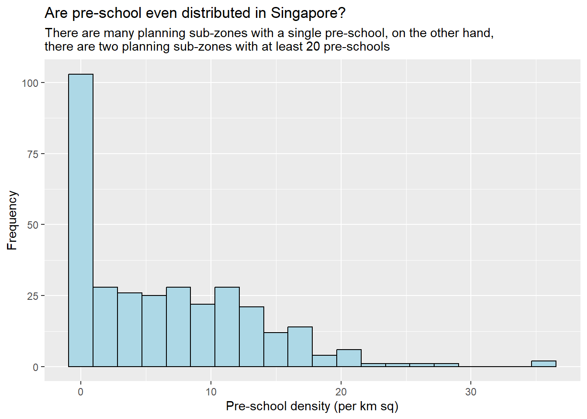

pacman::p_load(sf, tidyverse)Hands-on Exercise 1
1. Getting Started
In this hands-on exercise, I will be performing geospatial data science tasks in R by using the sf and tidyverse R packages. By the end of this hands-on exercise, I would have acquired the following competencies:
- installing and loading sf and tidyverse packages into R environment,
- importing geospatial data by using appropriate functions of sf package,
- importing aspatial data by using appropriate function of readr package,
- exploring the content of simple feature data frame by using appropriate Base R and sf functions,
- assigning or transforming coordinate systems by using using appropriate sf functions,
- converting an aspatial data into a sf data frame by using appropriate function of sf package,
- performing geoprocessing tasks by using appropriate functions of sf package,
- performing data wrangling tasks by using appropriate functions of dplyr package and
- performing Exploratory Data Analysis (EDA) by using appropriate functions from ggplot2 package.
2. Let’s Set Up!
2.1 Data Acquisition
Data are key to data analytics including geospatial analytics. Hence, before analysing, we need to assemble the necessary data. With that said, I have extracted the data sets from the following four sources:
- Master Plan 2014 Subzone Boundary (Web) from data.gov.sg
- Pre-Schools Location from data.gov.sg
- Cycling Path from LTADataMall
- Latest version of Singapore Airbnb listing data from Inside Airbnb
I will be tapping on these vastly available, public data from the government and private sectors for future exercises ahead!
2.2 Set Up the Folders
This is the file structure for containing the data files that I have extracted in the previous step. The Hands-on_Ex1 folder consists of a data sub-folder, and is further separated by the geospatial and aspatial folders.

2.3 Installing R Packages
In this exercise, I will be using these two R packages
- sf for importing, managing, and processing geospatial data, and
- tidyverse for performing data science tasks such as importing, wrangling and visualising data.
Tidyverse consists of a family of R packages. In this hands-on exercise, the following packages will be used:
- readr for importing csv data,
- readxl for importing Excel worksheet,
- tidyr for manipulating data,
- dplyr for transforming data, and
- ggplot2 for visualising data
With that said, I installed the required packages using the code chunk below.
p_loadis a function of the pacman package that is used to install and load sf and tidyverse packages into our R environment.
3. Importing Geospatial Data into R
In this section, I will import the following geospatial data into R by using st_read() of the sf package:
MP14_SUBZONE_WEB_PL: a polygon feature layer in ESRI shapefile format,CyclingPath: a line feature layer in ESRI shapefile format, andPreSchool: a point feature layer in kml file format.
3.1 Importing Polygon Feature Data in .shp Format
The code chunk below uses st_read() function of sf package to import MP14_SUBZONE_WEB_PL shapefile (.shp) into R as a polygon feature data frame.
mpsz = st_read(dsn = "data/geospatial", layer = "MP14_SUBZONE_WEB_PL")Reading layer `MP14_SUBZONE_WEB_PL' from data source
`C:\SamanthaxFoo\IS415-GAA\Hands-on_Ex\Hands-on_Ex1\data\geospatial'
using driver `ESRI Shapefile'
Simple feature collection with 323 features and 15 fields
Geometry type: MULTIPOLYGON
Dimension: XY
Bounding box: xmin: 2667.538 ymin: 15748.72 xmax: 56396.44 ymax: 50256.33
Projected CRS: SVY21🔎 Observations: the
mpszsimple feature data frame contains 323 multipolygon features, 15 fields and is in the SVY21 projected coordinates system.
💡 Note:
dsndefines folder path andlayerdefines file name (AKA a shapefile, no need any extension like .shp)
3.2 Importing Polyline Feature Data in .shp Format
The code chunk below imports CyclingPath shapefile (.shp) into R as a polyline feature data frame.
cyclingpath = st_read(dsn = "data/geospatial",
layer = "CyclingPathGazette")Reading layer `CyclingPathGazette' from data source
`C:\SamanthaxFoo\IS415-GAA\Hands-on_Ex\Hands-on_Ex1\data\geospatial'
using driver `ESRI Shapefile'
Simple feature collection with 3138 features and 2 fields
Geometry type: MULTILINESTRING
Dimension: XY
Bounding box: xmin: 11854.32 ymin: 28347.98 xmax: 42644.17 ymax: 48948.15
Projected CRS: SVY21🔎 Observations: the
cyclingpathlinestring feature data frame contains 3138 features and 2 fields and it is in the SVY21 projected coordinates system.
3.3 Importing GIS Point Feature Data in .kml format
The code chunk below imports PreSchoolsLocation.kml kml format into R as a point feature data frame.
preschool = st_read("data/geospatial/PreSchoolsLocation.kml")Reading layer `PRESCHOOLS_LOCATION' from data source
`C:\SamanthaxFoo\IS415-GAA\Hands-on_Ex\Hands-on_Ex1\data\geospatial\PreSchoolsLocation.kml'
using driver `KML'
Simple feature collection with 2290 features and 2 fields
Geometry type: POINT
Dimension: XYZ
Bounding box: xmin: 103.6878 ymin: 1.247759 xmax: 103.9897 ymax: 1.462134
z_range: zmin: 0 zmax: 0
Geodetic CRS: WGS 84🔎 Observations: the
PreSchoolsLocation.kmlpoint feature data frame contains 2290 point features, 2 fields and is in the WGS84 projected coordinates
4. Importing Aspatial Data into R
4.1 Importing Aspatial Data
Notice that the listings data set is in csv file format. Instead of st_read(), we’ll use read_csv() from the readr package to import listings.csv.
listings <- read_csv("data/aspatial/listings.csv")Rows: 3540 Columns: 18
── Column specification ────────────────────────────────────────────────────────
Delimiter: ","
chr (6): name, host_name, neighbourhood_group, neighbourhood, room_type, l...
dbl (11): id, host_id, latitude, longitude, price, minimum_nights, number_o...
date (1): last_review
ℹ Use `spec()` to retrieve the full column specification for this data.
ℹ Specify the column types or set `show_col_types = FALSE` to quiet this message.This outputs an R object called
listingswhich is a tibble data frame.
Let’s take a peak into our listings tibble data frame.
glimpse(listings)Rows: 3,540
Columns: 18
$ id <dbl> 71609, 71896, 71903, 275343, 275344, 28…
$ name <chr> "Ensuite Room (Room 1 & 2) near EXPO", …
$ host_id <dbl> 367042, 367042, 367042, 1439258, 143925…
$ host_name <chr> "Belinda", "Belinda", "Belinda", "Kay",…
$ neighbourhood_group <chr> "East Region", "East Region", "East Reg…
$ neighbourhood <chr> "Tampines", "Tampines", "Tampines", "Bu…
$ latitude <dbl> 1.34537, 1.34754, 1.34531, 1.29015, 1.2…
$ longitude <dbl> 103.9589, 103.9596, 103.9610, 103.8081,…
$ room_type <chr> "Private room", "Private room", "Privat…
$ price <dbl> NA, 80, 80, 50, 50, NA, 85, 65, 45, 54,…
$ minimum_nights <dbl> 92, 92, 92, 180, 180, 92, 92, 180, 180,…
$ number_of_reviews <dbl> 19, 24, 46, 20, 16, 12, 131, 17, 5, 60,…
$ last_review <date> 2020-01-17, 2019-10-13, 2020-01-09, 20…
$ reviews_per_month <dbl> 0.12, 0.15, 0.29, 0.15, 0.11, 0.08, 0.8…
$ calculated_host_listings_count <dbl> 6, 6, 6, 49, 49, 6, 7, 49, 49, 6, 7, 7,…
$ availability_365 <dbl> 89, 148, 90, 62, 0, 88, 365, 0, 0, 365,…
$ number_of_reviews_ltm <dbl> 0, 0, 0, 0, 2, 0, 0, 1, 1, 1, 0, 0, 0, …
$ license <chr> NA, NA, NA, "S0399", "S0399", NA, NA, "…🔎 Observations: there are 3540 rows and 18 columns (not features and fields like in our simple data feature frame!)
💡 Note: we’ll be using the
latitudeandlongitudefields in the next phase. These fields appear to be adopting the WGS84 geographic coordinate system.
4.2 Converting Aspatial Data
Next, we’ll convert listing (a non-geospatial tabular data frame) into a simple feature data frame by using st_as_sf() from the sf package.
💡 Note: a non-simple feature data frame will simply not have a “geometry” column. Use
class(listings)as a simple test - if it outputs data.frame, tbl_df, tbl, etc and nosf, then it’s not a simple feature data frame!
listings_sf <- st_as_sf(listings, coords = c("longitude", "latitude"), crs=4326) %>% st_transform(crs = 3414)Indicates the column name of the x-coordinates, followed by that of the y-coordinates.
Indicates the coordinates system in epsg format (more info: epsg.io)
- EPSG: 4326 is WGS84 Geographic Coordinate System
- EPSG: 3414 is Singapore SVY21 Projected Coordinate System
To nest st_transform() and transform the newly created simple feature data frame into SVY21 Projected Coordinate System
This gives us the new simple feature data frame, listings_sf:
glimpse(listings_sf)Rows: 3,540
Columns: 17
$ id <dbl> 71609, 71896, 71903, 275343, 275344, 28…
$ name <chr> "Ensuite Room (Room 1 & 2) near EXPO", …
$ host_id <dbl> 367042, 367042, 367042, 1439258, 143925…
$ host_name <chr> "Belinda", "Belinda", "Belinda", "Kay",…
$ neighbourhood_group <chr> "East Region", "East Region", "East Reg…
$ neighbourhood <chr> "Tampines", "Tampines", "Tampines", "Bu…
$ room_type <chr> "Private room", "Private room", "Privat…
$ price <dbl> NA, 80, 80, 50, 50, NA, 85, 65, 45, 54,…
$ minimum_nights <dbl> 92, 92, 92, 180, 180, 92, 92, 180, 180,…
$ number_of_reviews <dbl> 19, 24, 46, 20, 16, 12, 131, 17, 5, 60,…
$ last_review <date> 2020-01-17, 2019-10-13, 2020-01-09, 20…
$ reviews_per_month <dbl> 0.12, 0.15, 0.29, 0.15, 0.11, 0.08, 0.8…
$ calculated_host_listings_count <dbl> 6, 6, 6, 49, 49, 6, 7, 49, 49, 6, 7, 7,…
$ availability_365 <dbl> 89, 148, 90, 62, 0, 88, 365, 0, 0, 365,…
$ number_of_reviews_ltm <dbl> 0, 0, 0, 0, 2, 0, 0, 1, 1, 1, 0, 0, 0, …
$ license <chr> NA, NA, NA, "S0399", "S0399", NA, NA, "…
$ geometry <POINT [m]> POINT (41972.5 36390.05), POINT (…🔎 Observations:
Notice that a new column called
geometryhas been added into the data frame. On the other hand, thelongitudeandlatitudecolumns have been removed from the data frame.
5. Exploring Contents of a Simple Feature Data Frame
There are 3 ways to explore the contents of a simple feature data frame like mpsz!
5.1 Using st_geometry()
The sf data.frame contains a geometry column, that is a list of class sfc. We can retrieve the geometry list-column in this case by mpsz$geom or mpsz[[1]], but the more general way uses st_geometry().
# Retrieve geometry column
st_geometry(mpsz)Geometry set for 323 features
Geometry type: MULTIPOLYGON
Dimension: XY
Bounding box: xmin: 2667.538 ymin: 15748.72 xmax: 56396.44 ymax: 50256.33
Projected CRS: SVY21
First 5 geometries:MULTIPOLYGON (((31495.56 30140.01, 31980.96 296...MULTIPOLYGON (((29092.28 30021.89, 29119.64 300...MULTIPOLYGON (((29932.33 29879.12, 29947.32 298...MULTIPOLYGON (((27131.28 30059.73, 27088.33 297...MULTIPOLYGON (((26451.03 30396.46, 26440.47 303...5.2 Using glimpse()
We use glimpse() from the dplyr package to understand the data type of each fields.
E.g. FMEL-UPD_D field is in date data type and X_ADDR, Y_ADDR, SHAPE_L and SHAPE_AREA fields are in double-precision values.
# Get data types
glimpse(mpsz)Rows: 323
Columns: 16
$ OBJECTID <int> 1, 2, 3, 4, 5, 6, 7, 8, 9, 10, 11, 12, 13, 14, 15, 16, 17, …
$ SUBZONE_NO <int> 1, 1, 3, 8, 3, 7, 9, 2, 13, 7, 12, 6, 1, 5, 1, 1, 3, 2, 2, …
$ SUBZONE_N <chr> "MARINA SOUTH", "PEARL'S HILL", "BOAT QUAY", "HENDERSON HIL…
$ SUBZONE_C <chr> "MSSZ01", "OTSZ01", "SRSZ03", "BMSZ08", "BMSZ03", "BMSZ07",…
$ CA_IND <chr> "Y", "Y", "Y", "N", "N", "N", "N", "Y", "N", "N", "N", "N",…
$ PLN_AREA_N <chr> "MARINA SOUTH", "OUTRAM", "SINGAPORE RIVER", "BUKIT MERAH",…
$ PLN_AREA_C <chr> "MS", "OT", "SR", "BM", "BM", "BM", "BM", "SR", "QT", "QT",…
$ REGION_N <chr> "CENTRAL REGION", "CENTRAL REGION", "CENTRAL REGION", "CENT…
$ REGION_C <chr> "CR", "CR", "CR", "CR", "CR", "CR", "CR", "CR", "CR", "CR",…
$ INC_CRC <chr> "5ED7EB253F99252E", "8C7149B9EB32EEFC", "C35FEFF02B13E0E5",…
$ FMEL_UPD_D <date> 2014-12-05, 2014-12-05, 2014-12-05, 2014-12-05, 2014-12-05…
$ X_ADDR <dbl> 31595.84, 28679.06, 29654.96, 26782.83, 26201.96, 25358.82,…
$ Y_ADDR <dbl> 29220.19, 29782.05, 29974.66, 29933.77, 30005.70, 29991.38,…
$ SHAPE_Leng <dbl> 5267.381, 3506.107, 1740.926, 3313.625, 2825.594, 4428.913,…
$ SHAPE_Area <dbl> 1630379.27, 559816.25, 160807.50, 595428.89, 387429.44, 103…
$ geometry <MULTIPOLYGON [m]> MULTIPOLYGON (((31495.56 30..., MULTIPOLYGON (…5.3 Using head()
We use head() from the base R package to get the full information of the feature object mpsz. The n value indicates the no. of rows.
# Display top 5 rows of the feature object
head(mpsz, n=5) Simple feature collection with 5 features and 15 fields
Geometry type: MULTIPOLYGON
Dimension: XY
Bounding box: xmin: 25867.68 ymin: 28369.47 xmax: 32362.39 ymax: 30435.54
Projected CRS: SVY21
OBJECTID SUBZONE_NO SUBZONE_N SUBZONE_C CA_IND PLN_AREA_N
1 1 1 MARINA SOUTH MSSZ01 Y MARINA SOUTH
2 2 1 PEARL'S HILL OTSZ01 Y OUTRAM
3 3 3 BOAT QUAY SRSZ03 Y SINGAPORE RIVER
4 4 8 HENDERSON HILL BMSZ08 N BUKIT MERAH
5 5 3 REDHILL BMSZ03 N BUKIT MERAH
PLN_AREA_C REGION_N REGION_C INC_CRC FMEL_UPD_D X_ADDR
1 MS CENTRAL REGION CR 5ED7EB253F99252E 2014-12-05 31595.84
2 OT CENTRAL REGION CR 8C7149B9EB32EEFC 2014-12-05 28679.06
3 SR CENTRAL REGION CR C35FEFF02B13E0E5 2014-12-05 29654.96
4 BM CENTRAL REGION CR 3775D82C5DDBEFBD 2014-12-05 26782.83
5 BM CENTRAL REGION CR 85D9ABEF0A40678F 2014-12-05 26201.96
Y_ADDR SHAPE_Leng SHAPE_Area geometry
1 29220.19 5267.381 1630379.3 MULTIPOLYGON (((31495.56 30...
2 29782.05 3506.107 559816.2 MULTIPOLYGON (((29092.28 30...
3 29974.66 1740.926 160807.5 MULTIPOLYGON (((29932.33 29...
4 29933.77 3313.625 595428.9 MULTIPOLYGON (((27131.28 30...
5 30005.70 2825.594 387429.4 MULTIPOLYGON (((26451.03 30...6. Plotting the Geospatial Data
In geospatial data science, looking at feature information is not sufficient. We are also interested in visualising the geospatial features of the sf object, in which plot() will help with that.
# Plot multi-plot of all attributes
plot(mpsz)Warning: plotting the first 9 out of 15 attributes; use max.plot = 15 to plot
all
The default plot of an sf object is a multi-plot of all attributes, up to a reasonable maximum as shown above.
We can, however, choose to plot the geometry only as such:
# Plot the geometry only
plot(st_geometry(mpsz))
Or, plot the sf object using a specific attribute
# Plot a specific attribute
plot(mpsz["PLN_AREA_N"])
💡 Note:
plot()is meant for plotting the geospatial object at a high level. For high cartographic quality plot, other R package such astmapshould be used.
7. Working with Projection
What is “map projection”?: it is an important property of geospatial data. In order to perform geoprocessing using two geospatial data, we need to ensure that both geospatial data are projected using similar coordinate system.
In this section, I project a simple feature data frame from one coordinate system to another coordinate system. The technical term of this process is called projection transformation.
7.1 Assigning EPSG code to a simple feature data frame
Define “ESPG code”: a unique identifier to represent coordinate systems.
Common issues when importing geospatial data into R : the coordinate system of the source data are either…
- Missing (such as due to missing .proj for ESRI shapefile)
- Wrongly assigned
To check the coordinate system of mpsz simple feature data frame, I’ll use st_crs() from the sf package.
* crs = Coordinate Reference System
# Check coordinate system
st_crs(mpsz)Coordinate Reference System:
User input: SVY21
wkt:
PROJCRS["SVY21",
BASEGEOGCRS["SVY21[WGS84]",
DATUM["World Geodetic System 1984",
ELLIPSOID["WGS 84",6378137,298.257223563,
LENGTHUNIT["metre",1]],
ID["EPSG",6326]],
PRIMEM["Greenwich",0,
ANGLEUNIT["Degree",0.0174532925199433]]],
CONVERSION["unnamed",
METHOD["Transverse Mercator",
ID["EPSG",9807]],
PARAMETER["Latitude of natural origin",1.36666666666667,
ANGLEUNIT["Degree",0.0174532925199433],
ID["EPSG",8801]],
PARAMETER["Longitude of natural origin",103.833333333333,
ANGLEUNIT["Degree",0.0174532925199433],
ID["EPSG",8802]],
PARAMETER["Scale factor at natural origin",1,
SCALEUNIT["unity",1],
ID["EPSG",8805]],
PARAMETER["False easting",28001.642,
LENGTHUNIT["metre",1],
ID["EPSG",8806]],
PARAMETER["False northing",38744.572,
LENGTHUNIT["metre",1],
ID["EPSG",8807]]],
CS[Cartesian,2],
AXIS["(E)",east,
ORDER[1],
LENGTHUNIT["metre",1,
ID["EPSG",9001]]],
AXIS["(N)",north,
ORDER[2],
LENGTHUNIT["metre",1,
ID["EPSG",9001]]]]Notice the last few lines, the ESPG code is wrongly indicated as 9001. The correct ESPG code for SVY21 should be 3114. Thus, we’ll assign the correct code as such.
# Assign new ESPG code
mpsz3414 <- st_set_crs(mpsz, 3414)Warning: st_crs<- : replacing crs does not reproject data; use st_transform for
that# Check that crs has been updated to 3414
st_crs(mpsz3414)Coordinate Reference System:
User input: EPSG:3414
wkt:
PROJCRS["SVY21 / Singapore TM",
BASEGEOGCRS["SVY21",
DATUM["SVY21",
ELLIPSOID["WGS 84",6378137,298.257223563,
LENGTHUNIT["metre",1]]],
PRIMEM["Greenwich",0,
ANGLEUNIT["degree",0.0174532925199433]],
ID["EPSG",4757]],
CONVERSION["Singapore Transverse Mercator",
METHOD["Transverse Mercator",
ID["EPSG",9807]],
PARAMETER["Latitude of natural origin",1.36666666666667,
ANGLEUNIT["degree",0.0174532925199433],
ID["EPSG",8801]],
PARAMETER["Longitude of natural origin",103.833333333333,
ANGLEUNIT["degree",0.0174532925199433],
ID["EPSG",8802]],
PARAMETER["Scale factor at natural origin",1,
SCALEUNIT["unity",1],
ID["EPSG",8805]],
PARAMETER["False easting",28001.642,
LENGTHUNIT["metre",1],
ID["EPSG",8806]],
PARAMETER["False northing",38744.572,
LENGTHUNIT["metre",1],
ID["EPSG",8807]]],
CS[Cartesian,2],
AXIS["northing (N)",north,
ORDER[1],
LENGTHUNIT["metre",1]],
AXIS["easting (E)",east,
ORDER[2],
LENGTHUNIT["metre",1]],
USAGE[
SCOPE["Cadastre, engineering survey, topographic mapping."],
AREA["Singapore - onshore and offshore."],
BBOX[1.13,103.59,1.47,104.07]],
ID["EPSG",3414]]7.2 Converting Data from Geographic to Projected Coordinate System
Recall that the geographic coordinate system (e.g., WGS84) is not appropriate for analyses that involve distance/area. Hence, it’s common for us to transform the original data to a projected coordinate system.
Let’s take a look at the preschool simple feature data frame. It shows that it is in the WGS84 coordinate system, i.e., geographic coordinate system.
# Transform projection
st_geometry(preschool)Geometry set for 2290 features
Geometry type: POINT
Dimension: XYZ
Bounding box: xmin: 103.6878 ymin: 1.247759 xmax: 103.9897 ymax: 1.462134
z_range: zmin: 0 zmax: 0
Geodetic CRS: WGS 84
First 5 geometries:POINT Z (103.8072 1.299333 0)POINT Z (103.826 1.312839 0)POINT Z (103.8409 1.348843 0)POINT Z (103.8048 1.435024 0)POINT Z (103.839 1.33315 0)Now, we’ll transform preschool’s coordinate system from geographic (WGS84) to projected (SVY21).
preschool3414 <- st_transform(preschool, crs = 3414)🔎 Observations: Notice that the last row shows “Projected CRS” now
8. Geoprocessing with sf Package
Besides providing functions to handling geospatial data (i.e. importing, exporting, assigning projection, transforming projection etc), sf package also offers a wide range of geoprocessing (also known as GIS analysis) functions.
In this section, I perform two commonly-used geoprocessing functions, namely buffering and point in polygon count.
8.1 Buffering
📝The scenario: The authority is planning to upgrade the exiting cycling path. To do so, they need to acquire 5 metres of reserved land on both sides of the current cycling path. You are tasked to determine the extend of the land needed to be acquired and their total area.
💡The solution:
Firstly, st_buffer() of the sf package is used to compute the 5-meter buffers around cycling paths
buffer_cycling <- st_buffer(cyclingpath, dist = 5, nQuadSegs = 30)A higher
nQuadSegsvalue results in a smoother and more accurate circular buffer. The default is30.
This is followed by calculating the area of the buffers
buffer_cycling$AREA <- st_area(buffer_cycling)Lastly, sum() of Base R will be used to derive the total land involved
sum(buffer_cycling$AREA)2218855 [m^2]8.2 Point-in-polygon count
📝The scenario: A pre-school service group want to find out the numbers of pre-schools in each Planning Subzone.
💡The solution:
Firstly, identify pre-schools located inside each Planning Subzone by using st_intersects(). Next, length() of Base R is used to calculate the no. of pre-schools that fall inside each planning subzone.
mpsz3414$`PreSch Count`<- lengths(st_intersects(mpsz3414, preschool3414))You can check the summary statistics of the newly derived PreSch Count field by using summary() as shown below.
summary(mpsz3414$`PreSch Count`) Min. 1st Qu. Median Mean 3rd Qu. Max.
0.00 0.00 4.00 7.09 10.00 72.00 To list the planning subzone with the most number of pre-school, top_n() of the dplyr package is used.
top_n(mpsz3414, 1, `PreSch Count`)Simple feature collection with 1 feature and 16 fields
Geometry type: MULTIPOLYGON
Dimension: XY
Bounding box: xmin: 39655.33 ymin: 35966 xmax: 42940.57 ymax: 38622.37
Projected CRS: SVY21 / Singapore TM
OBJECTID SUBZONE_NO SUBZONE_N SUBZONE_C CA_IND PLN_AREA_N PLN_AREA_C
1 189 2 TAMPINES EAST TMSZ02 N TAMPINES TM
REGION_N REGION_C INC_CRC FMEL_UPD_D X_ADDR Y_ADDR SHAPE_Leng
1 EAST REGION ER 21658EAAF84F4D8D 2014-12-05 41122.55 37392.39 10180.62
SHAPE_Area geometry PreSch Count
1 4339824 MULTIPOLYGON (((42196.76 38... 72Next, I calculate the density of pre-school by planning subzone. I used st_area() of the sf package to derive the area of each planning subzone.
mpsz3414$Area <- mpsz3414 %>% st_area()Next, I used mutate()of the dplyr package to compute the density by using the code chunk below.
mpsz3414 <- mpsz3414 %>% mutate(`PreSch Density` = `PreSch Count`/Area * 1000000)9. Exploratory Data Analysis (EDA)
In practice, many geospatial analytics start with Exploratory Data Analysis. In this section, I will tap on ggplot2() functions to create functional yet transparent statistical graphs for EDA purposes.
Firstly, we will plot a histogram to reveal the distribution of PreSch Density. Conventionally, hist() of R Graphics will be used as shown.
hist(mpsz3414$`PreSch Density`)
Although the syntax is very easy to use, the output is currently far from meeting publication quality. Furthermore, hist() function has limited room for further customisation.
In the code chunk below, appropriate ggplot2() functions will be used.
ggplot(data=mpsz3414,
aes(x= as.numeric(`PreSch Density`)))+
geom_histogram(bins=20,
color="black",
fill="light blue") +
labs(title = "Are pre-school even distributed in Singapore?",
subtitle= "There are many planning sub-zones with a single pre-school, on the other hand, \nthere are two planning sub-zones with at least 20 pre-schools",
x = "Pre-school density (per km sq)",
y = "Frequency")
Using ggplot2 method, I plot a scatterplot showing the relationship between Pre-school Density and Pre-school Count.
ggplot(data=mpsz3414,
aes(y = `PreSch Count`,
x= as.numeric(`PreSch Density`)))+
geom_point(color="black",
fill="light blue") +
xlim(0, 40) +
ylim(0, 40) +
labs(title = "",
x = "Pre-school density (per km sq)",
y = "Pre-school count")Warning: Removed 2 rows containing missing values or values outside the scale range
(`geom_point()`).